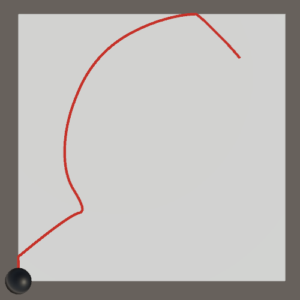

Sliding a Sphere
Player-Controlled Motion
- Put a sphere with a trail on a plane.
- Position the sphere based on player input.
- Control velocity and acceleration.
- Limit the sphere's position and make it bounce off edges.
This is the first installment of a tutorial series about controlling the movement of a character. Specifically, we'll slide a sphere based on player input.
This tutorial is made with Unity 2019.2.9f1. It assumes that you've gone through the Basics tutorials first.
Controlling Position
Many games are about a character that has to move around to accomplish some goal. The player's task is to guide the character. Action games give you direct control by steering the character, usually by pressing keys or turning a stick. Point-and-click games have you indicate a goal position and the character moves there automatically. Programming games make you write instructions that the character executes. And so on.
In this tutorial series we will focus on how to control a character in a 3D action game. We start simple, by sliding a sphere around on a small flat rectangle. Once we have a good grip on that we can make it more complex in the future.
Setting the Scene
Start with a new default 3D project. We don't need anything from the package manager at this point, although you could use the render pipeline of your choice.
I always use linear color space, which you can configure in the project settings via Edit / Project Settings / Player / Other Settings.
The default SampleScene scene has a camera and a directional light, which we'll keep. Create a plane to represent the ground, plus a sphere, both positioned at the origin. The default sphere has a radius of 0.5, so set its Y coordinate to 0.5 to make it look like it sits on top of the ground plane.
We're limiting ourselves to 2D movement on the ground, so let's position the camera above the plane looking down to get a good view of the play area in the game window. Also set its Projection mode to Orthographic. That gets rid of perspective, allowing us to see the 2D movement without distortion.
The only thing left that muddles our view is the sphere's shadow. Get rid of it by setting the light's Shadow Type to None, or No Shadows depending on the Unity version.

Create materials for the ground and sphere and configure them as you like. I made the sphere black and the ground dull light gray. We'll also visualize the movement with a trail, so create a material for that as well. I'll use an unlit reddish material for it. Finally, we need a MovingSphere script to implement the movement.
The script can start as an empty extension of MonoBehaviour.
using UnityEngine;
public class MovingSphere : MonoBehaviour { }
Add both a TrailRenderer and our MovingSphere component to the sphere. Leave everything else as it is.
Assign the trail material to the first and only element of the Materials array of the TrailRenderer component. It doesn't need to cast shadows, though that's not essential as we've disabled those anyway. Besides that, reduce the Width from 1.0 to a more reasonable value like 0.1, which will generate a thin line.
Although we haven't coded any movement yet, we can get a preview of how it would look by entering play mode and moving the sphere around in the scene window.
Reading Player Input
To move the sphere we have to read the player's input commands. We do this in the Update method of MovingSphere. The player input is 2D so we can store it in a Vector2 variable. Initially we'll set both its X and Y components to zero, then use those to position the sphere in the XZ plane. Thus the input's Y component becomes the position's Z component. The Y position remains zero.
using UnityEngine;
public class MovingSphere : MonoBehaviour {
void Update () {
Vector2 playerInput;
playerInput.x = 0f;
playerInput.y = 0f;
transform.localPosition = new Vector3(playerInput.x, 0.5f, playerInput.y);
}
}
The simplest way to retrieve directional input from the player is by invoking Input.GetAxis with an axis name. Unity has both a Horizontal and Vertical input axis defined by default, which you can inspect in the Input section of the project settings. We'll use the horizontal value for X and the vertical value for Y.
playerInput.x = Input.GetAxis("Horizontal");
playerInput.y = Input.GetAxis("Vertical");
The default settings link these axes to the arrow and WASD keys. The input values are also tweaked so the keys behave somewhat like a controller stick. You could adjust these settings as you like, but I keep the default settings.
Both axes also have a second definition, which link them to the input of a joystick or left controller stick. This allows for much smoother input, but I'll use the keys for all animations except the next one.
Normalizing the Input Vector
The axes return zero when they are at rest and −1 or 1 at their extremes. As we use the input to set the sphere's position it is constrained to a rectangle with the same range. At least, that's the case for key input because the keys are independent. In the case of a stick the dimensions are linked and we are usually constrained to a maximum distance of 1 from the origin in any direction, thus limiting the position to lie within a circle.
The advantage of the controller input is that the maximum length of the input vector is always 1, no matter the direction. So movement can be equally fast in all directions. This is not the case for keys, where the maximum is 1 for a single key but √2 when both keys are pressed, meaning that diagonal movement is the fastest.
The maximum for keys is √2 because of the Pythagorean theorem. The axis values define the lengths of two sides of a right triangle and the combined vector is the hypotenuse. Hence, the magnitude of the input vector is `sqrt(x^2+y^2)`.
We can make sure that the vector's length never exceeds 1 by dividing the input vector by its magnitude. The result is always unit-length vector, unless its initial length was zero in which case the result is undefined. This process is known as normalizing a vector. We can do this by invoking Normalize on the vector, which scales itself and becomes a zero vector if the result would be undefined.
playerInput.x = Input.GetAxis("Horizontal");
playerInput.y = Input.GetAxis("Vertical");
playerInput.Normalize();
Constraining the Input Vector
Always normalizing the input vector limits the position to always lie on the circle, unless the input is neutral in which case we end up at the origin. The lines between the origin and the circle represent a single frame where the circle jumped from the center to the circle or back.
Such all-or-nothing input can be desirable, but let's make all positions inside the circle valid as well. We do that by only adjusting the input vector if its magnitude exceeds one. A convenient way to do this is by invoking the static Vector2.ClampMagnitude method instead of Normalize, with the vector and a maximum of 1 as arguments. The result is a vector that is either the same or scaled down to the provided maximum.
//playerInput.Normalize();playerInput = Vector2.ClampMagnitude(playerInput, 1f);
Controlling Velocity
What we've been doing so far is directly using the input to set the sphere's position. This means that when the input vector `i` changes the sphere's position `p` immediately changes to the same value. Hence `p = i`. This isn't proper motion, it's teleportation. A more natural way to control the sphere is to determine its next position `p_1` by adding a displacement vector `d` to its old position `p_0`, so `p_1 = p_0 + d`.
Relative Movement
By using `d = i` instead of `p = i` we make the relationship between the input and position less direct. This removes the constrains on the position as it is now relative to itself instead of the origin after the first update. The position is thus described by an infinite iterative sequence `p_(n+1) = p_n + d` with `p_0` defined as the starting position.
Vector3 displacement = new Vector3(playerInput.x, 0f, playerInput.y); transform.localPosition += displacement;
Velocity
Our sphere can indeed move anywhere, but it goes so fast that it's hard to control. It's a consequence of adding the input vector each update. The higher the frame rate the faster it goes. For consistent results we do not want the frame rate to affect our input. If we use a constant input then we want a constant displacement, regardless of the potentially fluctuating frame rate.
For our purposes a single frame represents a duration: how much time `t` passed between the start of the previous and the current frame, which we can access via Time.deltaTime. Our displacement is thus actually `d = it` and we incorrectly assumed that `t` is constant.
The displacement is measured in Unity units, which are assumed to represent one meter. But we multiply the input by a duration, expressed in seconds. To arrive at meters the input must be measured in meter per second. Thus the input vector represents a velocity: `v = i` and `d = vt`.
Vector3 velocity = new Vector3(playerInput.x, 0f, playerInput.y); Vector3 displacement = velocity * Time.deltaTime; transform.localPosition += displacement;
Speed
Our maximum input vector has a magnitude of 1, which represents a velocity of one meter per second, which is equal to 3.6 kilometers per hour, about 2.24 miles per hour. That isn't very fast.
We can increase the maximum velocity by scaling the input vector. The scale factor represents a maximum speed, which is a velocity without direction. Add a maxSpeed field with a SerializeField attribute for it with a default of 10 and give it a Range attribute for something like 1–100.
[SerializeField, Range(0f, 100f)] float maxSpeed = 10f;
Multiply the input vector and max speed to find the desired velocity.
Vector3 velocity = new Vector3(playerInput.x, 0f, playerInput.y) * maxSpeed;
Acceleration
Because we have direct control over the velocity it can be changed instantaneously. Only the filtering applied by the input system slows down the change somewhat. In reality velocity cannot change immediately. A change requires some effort and time, just like changing a position does. The rate of change of a velocity is known as acceleration `a`, which leads to `v_(n+1)=v_n+at` with `v_0` being the zero vector. Deceleration is simply an acceleration opposite to the current velocity so doesn't require special treatment.
Let's see what happens if we use the input vector to control acceleration instead of velocity directly. This requires us to keep track of the current velocity, so store it in a field.
Vector3 velocity;
The input vector now defines the acceleration in Update, but let's keep multiplying it with maxSpeed for now, temporarily reinterpreting it as max acceleration. Then add it to the velocity before calculating displacement.
Vector3 acceleration = new Vector3(playerInput.x, 0f, playerInput.y) * maxSpeed; velocity += acceleration * Time.deltaTime; Vector3 displacement = velocity * Time.deltaTime;
Desired Velocity
Controlling acceleration instead of velocity produces much smoother motion, but it also weakens our control over the sphere. It's like we're driving a car instead of walking. In most games a more direct control over velocity is required, so let's go back to that approach. However, the application of acceleration does produce smoother motion.
We can combine both approaches by directly controlling a target velocity and applying acceleration to the actual velocity until it matches the desired one. We can then tune the responsiveness of the sphere by adjusting its maximum acceleration. Add a serializable field for that.
[SerializeField, Range(0f, 100f)] float maxAcceleration = 10f;
In Update we now use the input vector to define a desired velocity and no longer adjust velocity the old way.
Vector3 desiredVelocity = new Vector3(playerInput.x, 0f, playerInput.y) * maxSpeed;//velocity += acceleration * Time.deltaTime;
Instead, we first find the maximum speed change by multiplying the max acceleration with `t`. That's by how much we're able to change velocity this update.
Vector3 desiredVelocity = new Vector3(playerInput.x, 0f, playerInput.y) * maxSpeed; float maxSpeedChange = maxAcceleration * Time.deltaTime;
Let's first consider only the X component of the velocity. If it's less than desired then add the maximum change.
float maxSpeedChange = maxAcceleration * Time.deltaTime;
if (velocity.x < desiredVelocity.x) {
velocity.x += maxSpeedChange;
}
That might cause an overshoot, which we can prevent by taking the minimum of the increased and desired value. There's a Mathf.Min method that we can use here.
if (velocity.x < desiredVelocity.x) {
//velocity.x += maxSpeedChange;
velocity.x =
Mathf.Min(velocity.x + maxSpeedChange, desiredVelocity.x);
}
Alternatively, the velocity might be greater than desired. In that case we subtract the max change and take the maximum of that and the desired value, via Mathf.Max.
if (velocity.x < desiredVelocity.x) {
velocity.x =
Mathf.Min(velocity.x + maxSpeedChange, desiredVelocity.x);
}
else if (velocity.x > desiredVelocity.x) {
velocity.x =
Mathf.Max(velocity.x - maxSpeedChange, desiredVelocity.x);
}
We could also do all that via the convenient Mathf.MoveTowards method, passing it the current and desired values plus the maximum allowed change. Do that for both the X and Z components separately.
float maxSpeedChange = maxAcceleration * Time.deltaTime;//if (velocity.x < desiredVelocity.x) {// velocity.x =// Mathf.Min(velocity.x + maxSpeedChange, desiredVelocity.x);//}//else if (velocity.x > desiredVelocity.x) {// velocity.x =// Mathf.Max(velocity.x - maxSpeedChange, desiredVelocity.x);//}velocity.x = Mathf.MoveTowards(velocity.x, desiredVelocity.x, maxSpeedChange); velocity.z = Mathf.MoveTowards(velocity.z, desiredVelocity.z, maxSpeedChange);

Now we can tweak the maximum acceleration to arrive at a desired trade-off between smooth motion and responsiveness.
Constraining Position
Besides controlling the velocity of a character a big part of games is limiting where it can go. Our simple scene contains a plane that represents the ground. Let's make it so the sphere must remain on the plane.
Staying Within the Square
Rather than use the plane itself we'll simply make the allowed area a serializable field of the sphere. We can use a Rect struct value for this. Give it a default value that matches the default plane, by invoking its constructor method with −5 as its first two arguments and 10 as the last two. These define its bottom left corner and size.
[SerializeField] Rect allowedArea = new Rect(-5f, -5f, 10f, 10f);
We constrain the sphere by constraining the new position before assigning it to transform.localPosition. So store it in a variable first.
//transform.localPosition += displacement;Vector3 newPosition = transform.localPosition + displacement; transform.localPosition = newPosition;
We can invoke Contains on the allowed area to check whether a point lies inside it or on its edge. If this isn't the case for the new position then let's set it to the current position, negating the movement during this update.
Vector3 newPosition = transform.localPosition + displacement;
if (!allowedArea.Contains(newPosition)) {
newPosition = transform.localPosition;
}
transform.localPosition = newPosition;
When we pass a Vector3 to Contains it checks the XY coordinates, which isn't correct in our case. So pass it a new Vector2 with the XZ coordinates.
if (!allowedArea.Contains(new Vector2(newPosition.x, newPosition.z))) {
newPosition = transform.localPosition;
}

Our sphere can no longer escape, coming to a halt when it tries to. The result is jerky because movement is ignored during some frames, but we'll deal with that shortly. Before that note that the sphere can move all the way until it sits on top of the plane's edge. That's because we're limiting its position and don't take its radius into consideration. It would look better if the entire sphere remains inside the allowed area. We could change our code to take the radius into account, but the alternative is to simply shrink the allowed area. That's sufficient for our simple scene.
Move the area's corner up by 0.5 and decrease its size by 1 in both dimensions.
Exact Placement
We can get rid of the jerky movement by clamping the new position to the allowed area instead of ignoring it. We can do that by invoking Mathf.Clamp with a value and its allowed minimum and maximum. Use the xMin and xMax properties of the area for X and the yMin and yMax properties for Z.
if (!allowedArea.Contains(new Vector2(newPosition.x, newPosition.z))) {
//newPosition = transform.localPosition;
newPosition.x =
Mathf.Clamp(newPosition.x, allowedArea.xMin, allowedArea.xMax);
newPosition.z =
Mathf.Clamp(newPosition.z, allowedArea.yMin, allowedArea.yMax);
}
Eliminating Velocity
The sphere now appears to stick to edges. After reaching an edge we slide along it, but it takes a while before we can move away from the edge. This happens because the sphere's velocity still points toward the edge. We have to change direction by acceleration away from the edge, which takes a while depending on the max acceleration.
If our sphere were a ball and the area's edge a wall, then if it hits the wall it should come to a stop. This indeed happens. But if the wall were to suddenly disappear the ball wouldn't regain its earlier velocity. The momentum is gone, its energy transferred during the collision, which might've caused damage. So we have to get rid of the velocity when hitting an edge. But it's still possible to slide along the edge, thus only the velocity component that points in the direction of that edge should be eliminated.
To set the appropriate velocity component to zero we have to check whether we're out of bounds in both directions for both dimensions. At this point we might as well clamp the position ourselves, as we're performing the same checks as Mathf.Clamp and Contains.
//if (!allowedArea.Contains(new Vector2(newPosition.x, newPosition.z))) {//newPosition.x =// Mathf.Clamp(newPosition.x, allowedArea.xMin, allowedArea.xMax);//newPosition.z =// Mathf.Clamp(newPosition.z, allowedArea.yMin, allowedArea.yMax);//}if (newPosition.x < allowedArea.xMin) { newPosition.x = allowedArea.xMin; velocity.x = 0f; } else if (newPosition.x > allowedArea.xMax) { newPosition.x = allowedArea.xMax; velocity.x = 0f; } if (newPosition.z < allowedArea.yMin) { newPosition.z = allowedArea.yMin; velocity.z = 0f; } else if (newPosition.z > allowedArea.yMax) { newPosition.z = allowedArea.yMax; velocity.z = 0f; }
Bouncing
Velocity isn't always eliminated during a collision. If our sphere was a perfectly bouncing ball it would reverse direction in the relevant dimension instead. Let's try that.
if (newPosition.x < allowedArea.xMin) {
newPosition.x = allowedArea.xMin;
velocity.x = -velocity.x;
}
else if (newPosition.x > allowedArea.xMax) {
newPosition.x = allowedArea.xMax;
velocity.x = -velocity.x;
}
if (newPosition.z < allowedArea.yMin) {
newPosition.z = allowedArea.yMin;
velocity.z = -velocity.z;
}
else if (newPosition.z > allowedArea.yMax) {
newPosition.z = allowedArea.yMax;
velocity.z = -velocity.z;
}
The sphere now keeps it momentum, it just changes direction when it hits a wall. It does slow down a bit because after bouncing its velocity will no longer match the desired velocity. To get the best bounces the player has to immediately adjust their input.
Bounciness
We don't need to retain the entire velocity when reversing it. Some things bounce more than others. So let's make it configurable by adding a bounciness field, set to 0.5 by default with a range of 0–1. This allows us to make our sphere perfectly bouncy or not bounce at all, or anything in between.
[SerializeField, Range(0f, 1f)] float bounciness = 0.5f;
Factor the bounciness into the new velocity value when hitting an edge.
if (newPosition.x < allowedArea.xMin) {
newPosition.x = allowedArea.xMin;
velocity.x = -velocity.x * bounciness;
}
else if (newPosition.x > allowedArea.xMax) {
newPosition.x = allowedArea.xMax;
velocity.x = -velocity.x * bounciness;
}
if (newPosition.z < allowedArea.yMin) {
newPosition.z = allowedArea.yMin;
velocity.z = -velocity.z * bounciness;
}
else if (newPosition.z > allowedArea.yMax) {
newPosition.z = allowedArea.yMax;
velocity.z = -velocity.z * bounciness;
}
This doesn't represent realistic physics, which is much more complicated. But it's starting to look like it, which is good enough for most games. Also, we aren't very precise with our movement. Our calculations are only correct if an edge is reached exactly at the end of movement during a frame. This most likely isn't the case, which means that we should've moved the sphere a bit away from the edge immediately. First calculate the remaining time and then use that along with the new velocity in the relevant dimension. However, this might result in a second bounce, which makes things more complicated. Fortunately we don't need such precision to present a convincing illusion of a sphere bouncing around.
The next tutorial is Physics.